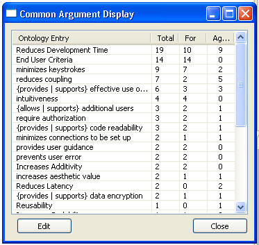
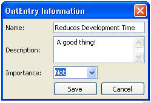
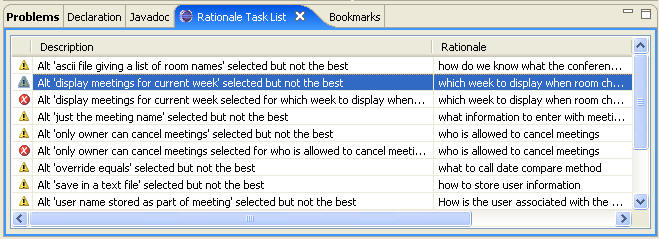

Design priorities are expressed in the rationale by the importance given to the items in the Argument Ontology. SEURAT allows arguments and claims to inherit importance values from the Argument Ontology. These importance values are used to evaluate each alternative. If the importance in the ontology is modified, that value will then propagate through the rest of the rationale. This may mean that some alternatives that were selected may no longer be the best choice.
For this example, we first looked to see what items in the Argument Ontology were appearing the most in arguments concerning selected alternatives. The following figure shows the Common Argument Display with Ontology Entries listed in the order of the number of references. The one that appears the most often is “Reduces Development Time.”

We then changed the importance value of “Reduces Development Time” from “Moderate” to “Not” as shown in the following figure. This caused all the claims and arguments that inherited their importance values from it to be re-evaluated. This resulted in several decisions where the best alternative was no longer selected.

The new warning messages generated are shown in the Rationale Tasks Display given in the following figure. Note, for purposes of this example all other errors and warnings were overridden so they would not appear on the display. This capability is very useful because priorities may change over the life of a system. For example, reducing development time may have been a primary concern when the system was first built because of schedule limitations, but some of those decisions may be worth re-examining when time is no longer as constrained.
